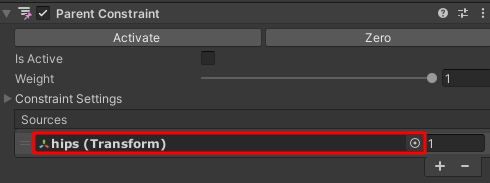

Installation
- Install the Creator Companion.
- Add the Poiyomi Toon Shader repository.
- Install the Avatars 3.0 Manager package and, if it is not already installed via .unitypackage, Poiyomi Toon Shader package to your new or existing Runa project.
- Unpack Runa_Warnings.unitypackage.
- Drag Assets/Kemono_Io/Runa_Warnings.prefab into the Runa_Source object.
-
Constrain the Runa_Warnings' armature to the Runa base model's armature.
- Fully expand the Runa_Warnings object's armature in the Hierarchy panel.
- Select one of the bones, such as hips.
- Drag the identically-named bone from the Runa base model's armature to the Parent Constraint field in the Inspector panel.
- Click the Activate button.
- Repeat the last three steps for each bone in the armature.
-
Merge the FX animator controllers.
- Open the Avatars 3.0 Manager.

- Select the Runa_Source object and expand the FX animator.
- Click the "Add animator to merge" button.
- Select the Runa_Warnings_Fx animator and click the "Merge on current" button.
- Open the Avatars 3.0 Manager.
-
Merge the parameters.
- Open the Avatars 3.0 Manager.
- Select the parameters icon.
- Select the Runa_Source object and Runa_Warnings_Parameters parameters.
- Click the "Copy parameters" button.
-
Adjust shape keys (optional).
- Select the Runa_Warnings object.

- If using the Runa Plug Tail addon, set the Adjust_Tail shape key to 100.
- If using the B0-0BA addon, set the Adjust_Breasts_Large shape key to 100.
- Select the Runa_Warnings object.
-
Adjust warning hue (optional).
- Select the Runa_Warnings object.

- Alter the Hue Shift value as desired.

- Select the Runa_Warnings object.